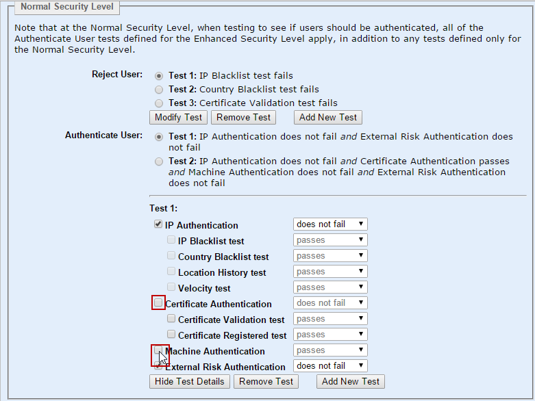

|
IdentityGuard Server 12.0 Administration Guide |
|
IdentityGuard Server 12.0 Administration Guide |
Use the Radius proxy for risk-based authentication if you want to reject first- or second-factor authentication requests from blacklisted IP addresses, or if you want to use IP authentication to allow users to skip second-factor authentication.
Note: Entrust IdentityGuard supports only the IP/Geolocation portion of risk-based authentication through the Radius proxy.
To configure the Radius proxy for risk-based authentication
1. Configure the policy to be used with the Radius proxy to skip machine authentication and certificate authentication.
The Radius proxy provides the IP address, but does not provide the information to support machine authentication or certificate authentication. For more information about changing the risk-based authentication policy, see Configuring risk-based authentication policies.
a. Login in to the Administration interface.
b. From the main menu, select Policies.
c. From the list of policies, select the policy you want to modify.
d. From the Policy Category drop-down list, select Risk-Based Authentication., and then click Edit Policy.
e. Select a test and click Modify Test.

f. Clear the check boxes next to Certificate Authentication and Machine Authentication.
g. Click Save Changes.
h. Repeat the procedure for all tests.
2. Configure the following properties for each VPN server.
a. Log in to the Properties Editor.
b. From the table of contents, click VPN Server Configuration.
c. Configure the following properties:
– Use IP Risk Based Authentication — Set to True, if you want the Radius proxy to apply risk-based authentication to users accessing Entrust IdentityGuard through a VPN server.
– IP Risk Based Authentication Security Level — Choose the security level to be used: Normal or Enhanced.
– IP Address Radius Attribute ID — Set the Radius attribute to use to retrieve the IP address. The default selection for this property is TUNNEL-CLIENT-ENDPOINT.
The IP address must be a dot notation representation of a V4 IP address.
Note: The VPN server must supply the attribute that retrieves the IP address. If your VPN server does not provide the user’s IP address in its authentication request to the Radius proxy, no risk-based assessment is possible.
For a complete Radius proxy description, see Radius Proxy Configuration.
d. Click Validate & Save.
e. Restart the Entrust IdentityGuard Server service to have the changes take effect.